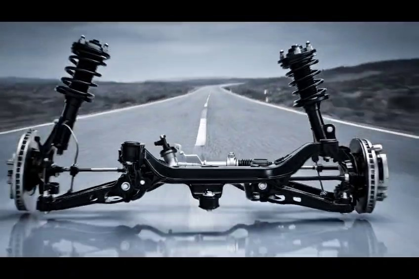
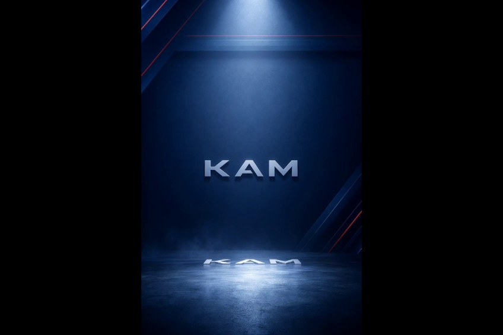
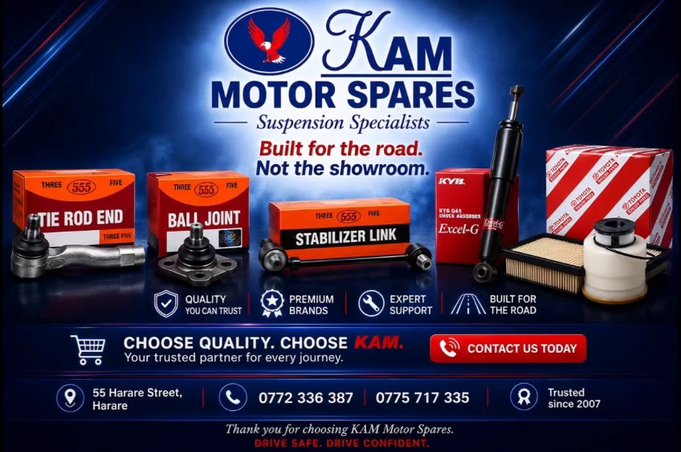
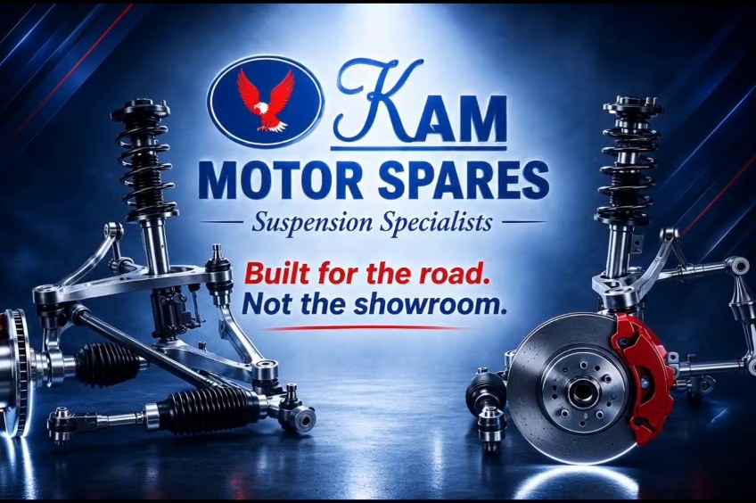

KAM Motor Spares
Built for the Road. Not the Showroom.
A 30-second AI-generated commercial built to position a suspension-parts retailer as the trusted answer to Zimbabwe's toughest roads.
Make the case for suspension you can trust.
KAM Motor Spares needed a commercial that could speak directly to Zimbabwean drivers who feel every pothole, every day. The brief called for a campaign that moves from a physical, visceral problem into calm, technical trust — without ever losing the urgency of the opening.
The direction was built to feel like a premium automotive commercial while running entirely on AI-generated footage, with real brand assets composited in at the final stage.
From impact to confidence.
The film opens on the moment of impact — a wheel striking a pothole — then moves through mechanical strain, the driver's experience, and the product itself, before resolving into a calm, confident brand close. Locked visual references kept the same vehicle, driver and lighting logic consistent across every generated scene.
Impact. Detail. Product. Confidence.




From script to finished commercial.
Concept & Script
Define the campaign message, tone and scene-by-scene narrative arc — from physical problem to earned trust.
Generation Planning
Translate each scene into a locked, reference-based prompt to hold vehicle, driver and lighting continuity across the sequence.
Generation
Generate each scene individually against its locked references, reviewing and approving before advancing to the next.
Voice & Sound
Direct a beat-by-beat voiceover performance moving from tension to reassurance to a confident brand promise.
Editing & Compositing
Assemble the sequence, composite supplied brand and product artwork, mix audio and finish the colour treatment.
Campaign Extension
Adapt the same creative system into additional formats for broader, targeted distribution.
Tools are part of the process, not the story.
This project relied heavily on reference-locked video generation to maintain continuity across a fully AI-generated commercial sequence.
Grok handled scene generation against locked continuity references; editing, sound and finishing were completed across the rest of the stack.
Structured AI production at commercial scale.
This project demonstrates the ability to run a full AI production pipeline for a real client — holding visual and character continuity across many generated scenes, directing voiceover performance beat by beat, and compositing real brand assets into a finished, broadcast-ready commercial.
Capabilities: creative direction · continuity-locked AI video generation · scene-by-scene prompt engineering · voiceover direction · brand-safe compositing · multi-format campaign thinking · client collaboration